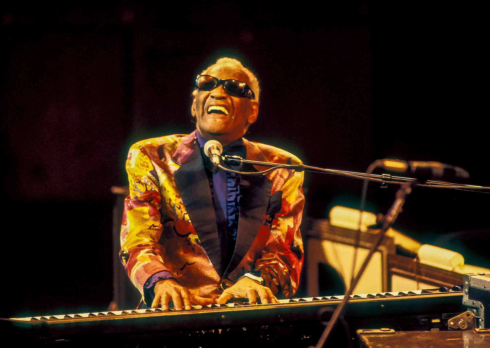
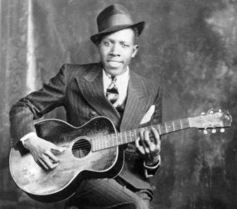
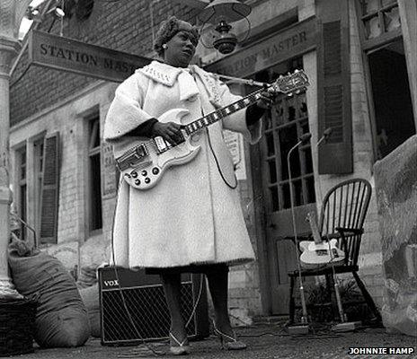
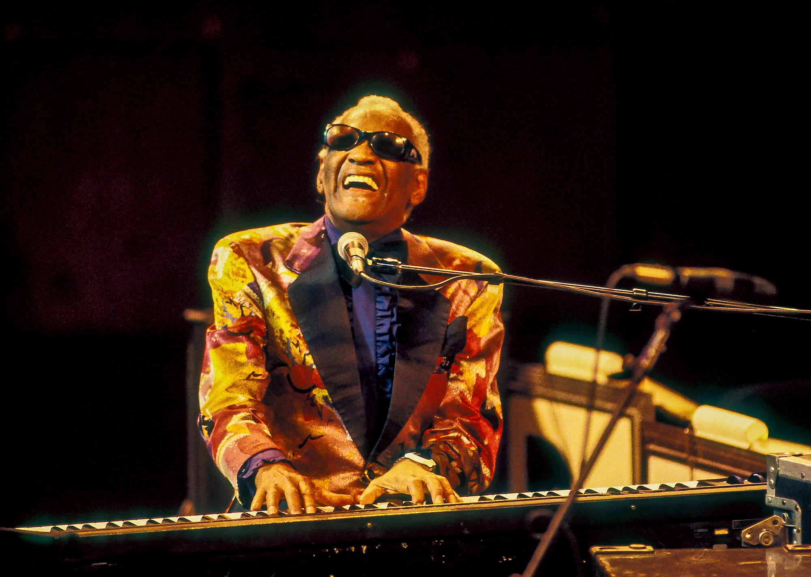
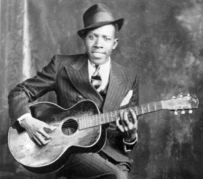
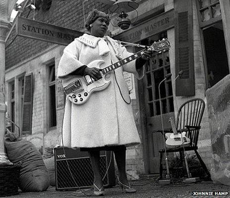

Conheça o "Pai do Rock". BLUES
Antes de entendermos o rock, precisamos saber de onde ele surgiu!
Na periferia dos Estados-Unidos moravam em sua grande maioria negros e pobres Por causa do racismo muito grande naquela época era proibidos negros e brancos frequentarem os mesmos bares. Então os negros decidiram se juntar em parques e "imitar" o jeito que os brancos tocavam! Com muito amor a música e usando suas raízes de musicas africanas/afro-americanas transformaram o som, surgiu então o BLUES Um gênero musical complexo e incrível, baseado na "luta" dos instrumentos.
Alguns grandes artistas do Blues temos:
- B. B. King (1926-2015)
- Ray Charles(1930-2004)
- Robert Jhonson(1911-1938)
- Sister Rosetta Tharpe(1925-1973)
 




